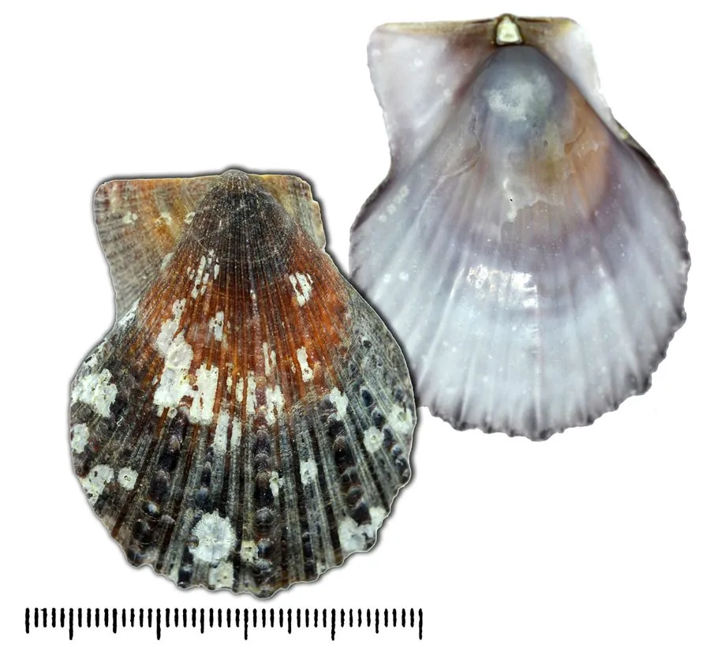

软体动物 · 动物界
栉孔扇贝 Azumapecten farreri

中国北方沿海重要的养殖扇贝，壳呈扇形、表面有放射状肋纹，能靠喷水推动身体游动，闭壳肌干制品即“干贝”。
- 分类
- 门软体动物门纲双壳纲目海扇蛤目科扇贝科属环扇贝属
- 栖息环境
- 近海岩礁、砾石和沙泥底质，靠足丝附着，水深 10–30 m
- 地理分布
- 中国黄海、渤海、东海北部，以及日本、朝鲜半岛沿海
- 保护级别
- 暂无评估；中国未列入国家重点保护野生动物名录（重要养殖贝类）
物种志
栉孔扇贝的贝壳呈扇形，两壳不等，右壳较平，左壳稍凸。壳表有 10 条左右的放射状粗肋，肋上带着小鳞片或棘刺，壳色多为紫褐、黄褐或灰白，壳长一般 6–10 cm。它有一个发达的闭壳肌，干制后就是名贵的海味“干贝”。贝壳的形状和纹理使它很容易与其他双壳类区分开来。
栉孔扇贝原产西北太平洋，分布于中国黄海、渤海、东海北部以及日本、朝鲜半岛沿海，栖息于水深 10–30 m 的岩礁、砾石和沙泥底质，靠足丝附着在礁石上。它是滤食性动物，靠鳃过滤水中的浮游生物和有机碎屑。遇到海星等天敌时，扇贝能迅速开合双壳，从壳内喷出水流推动身体短距离游动，这在双壳类中并不多见。栉孔扇贝雌雄异体，繁殖期在 5–7 月，产卵量可达数百万粒，幼体浮游一段时间后附着变态。中国从 20 世纪 70 年代起开展人工养殖，它如今已是北方海水养殖的支柱品种之一。目前它没有IUCN 的正式评估，中国也未将其列入国家重点保护野生动物名录。
形态与习性
- 食性滤食浮游生物和有机碎屑
- 壳长一般 6–10 cm
- 栖息深度水深 10–30 m 的岩礁和砾石底质
- 运动快速开合双壳喷水，推动身体短距离游动
- 繁殖雌雄异体，繁殖期在 5–7 月，产卵量可达数百万粒
- 经济闭壳肌干制品即“干贝”，是海味珍品
趣味知识
- 扇贝游泳时像拍手一样快速开合贝壳，喷出的水流能把它推离天敌。
- 它的壳表肋纹上长着小鳞片和棘刺，不同个体的颜色差异很大。
- 干贝是扇贝闭壳肌的干制品，一只扇贝只能取出很小的一块。